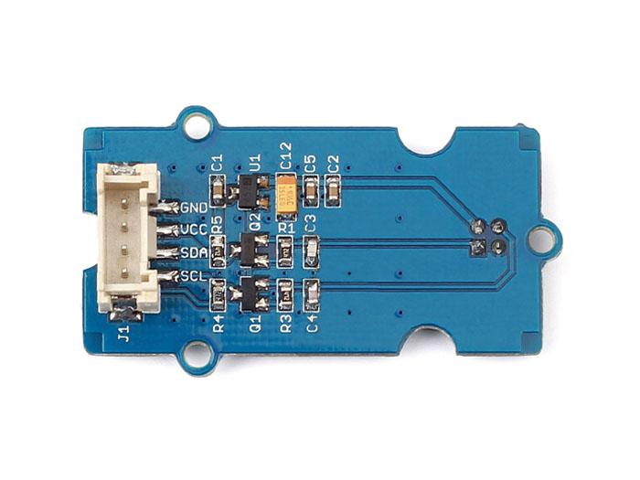
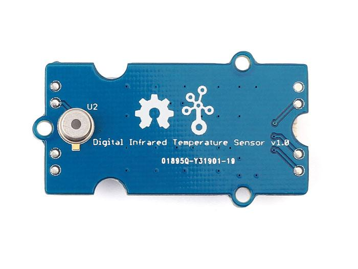
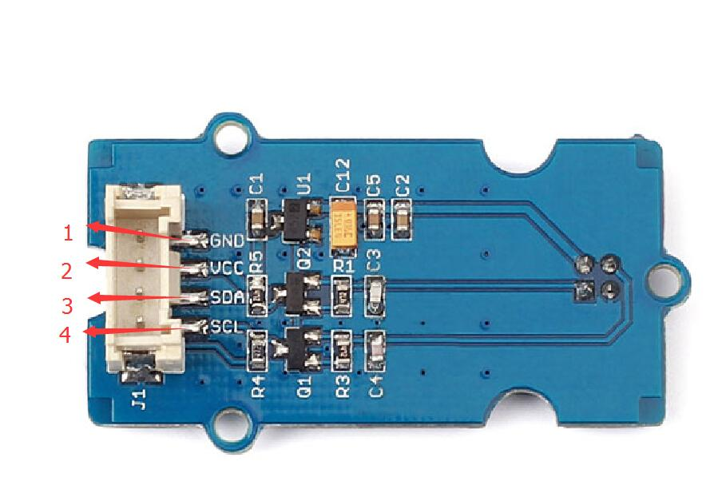
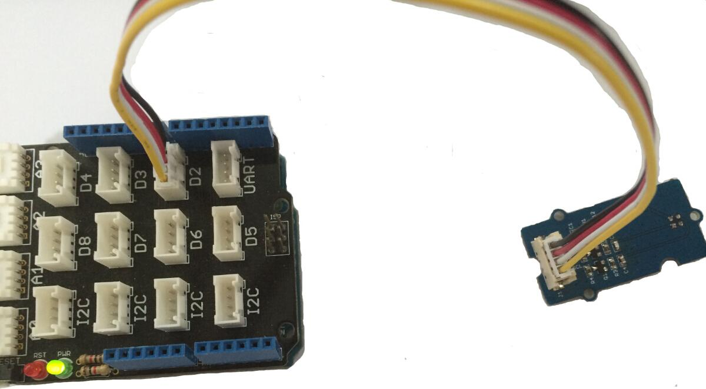
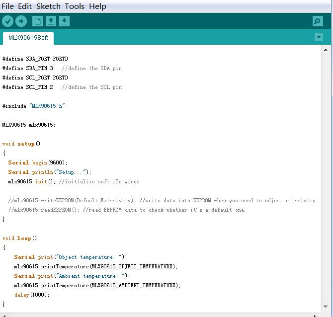
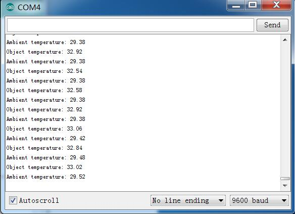

The Digital Infrared temperature sensor is a non-contact temperature measurement module which bases on MLX90615.Both the IR sensitive thermopile detector chip and the signal conditioning chip are integrated in the same package.This module communicates with Arduino using SMBus,up to 127 sensors can be read via common 2 wires.Thanks to the module's low noise amplifier, 16-bit ADC and powerful DSP unit, it can achieved a high accuracy of 1℃ over wide temperature rage and a high measurement resolution of 0.02℃.

| Item | Min | Typical | Max | Unit |
|---|---|---|---|---|
| Voltage | 2.6 | 3 | 3.4 | V |
| Current | 1.4 | 1.5 | mA | |
| Ambient Temperature Range | -40 - 85 | ℃ | ||
| Object Temperature Range | -40 - 115 | ℃ | ||
| Dimension | 20x40x9.6 | mm | ||

| Pin Numble | Name | Type | Function Description |
|---|---|---|---|
| 1 | GND | - | Signal ground |
| 2 | VCC | in | Positive Power Supply Input Terminal(3.3V or 5V) |
| 3 | SDA | in/out | I2C data input/output |
| 4 | SCL | in | I2C CLK |
We will provide an example here to show you how to use this sensor to measure the temperature of the target which is in front of the sensor,and print the result on the serial monitor.

You can see :

Since the sensor is factory calibrated with the digital SMBus compatible interface enabled,but the library is based on a soft i2c library,so you can use any digital pins on any AVR chip to drive the SDA and SCL lines.We use D2 as the SCL pin and D3 as the SDA pin in this demo code.
You can see :

Now,you can measure the temperature with this sensor.Ambient temperature is the MLX90615 package temperature and Object temperature is the object target temperature.According to our experiment,when you place the sensor in the normal indoor temperature,and ensure that there is nothing source of heat in front of the sensor's 1M scope.The Object temperature will approximately equal to Ambient temperature.When measuring the Object temperature,you should ensure the object is as close as possible whit the sensor,but do not touch the surface of the sensor,we recommend the distance is less than 3cm.Wish you have a fun try.
File:Grove Digital Infrared Temperature Sensor v1.0 eagle file.zip
File:MLX90615.pdf
Demo Code